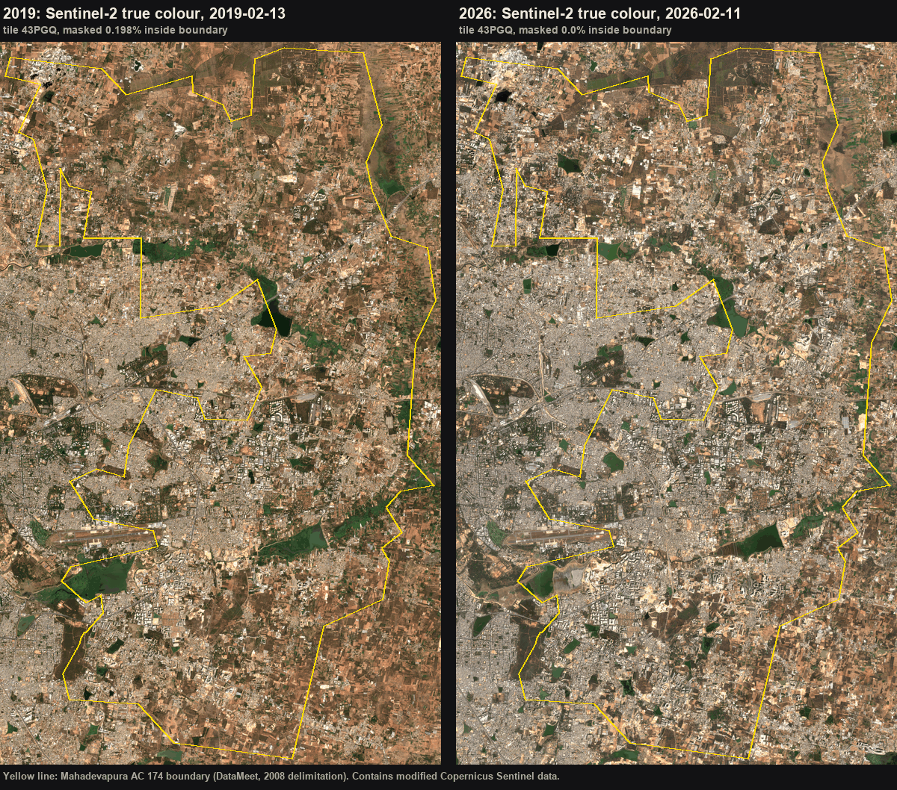
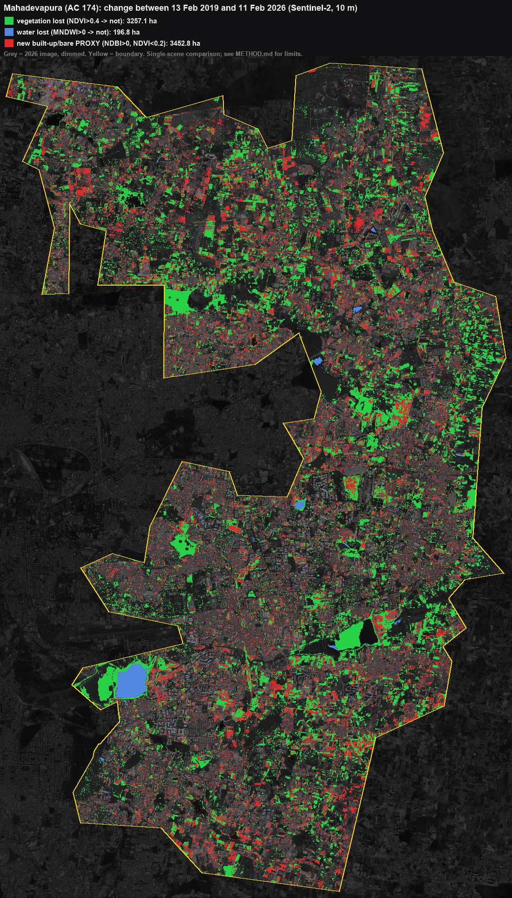

Two cloud-free Sentinel-2 satellite pictures of Assembly constituency 174 are compared pixel by pixel at 10 m. They were taken on almost the same date, 13 February 2019 and 11 February 2026, seven years apart. This is the first constituency in a planned series. It measures land cover only and says nothing about who caused any change.
A check of every clean January-to-March picture (36 dates in 2019, 2025 and 2026) found that green cover here moves by several points from one week to the next. Comparing 2019 and 2026 pictures taken within three days of each other, 2026 was lower in four pairs and higher in four, by between 6 points less and 16 points more. The pair used below (13 Feb 2019 and 11 Feb 2026) shows 3 points less, which is inside that range. So these pictures do not show a real loss of green cover, and the −748 ha below should not be quoted as one. The lake changes are a separate question: they are visible in the pictures themselves.
Share of the constituency with NDVI above 0.4, computed at 20 m on every Sentinel-2 date with less than 1% cloud inside the boundary (tile 43PGQ). Large dots are the two dates used for the tiles and maps. Data: research/satellite/mahadevapura_datecheck/ in the repo.


| Lake (OpenStreetMap name) | Water 2019 | Water 2026 | Change | Green on lake 2019 | Green on lake 2026 |
|---|---|---|---|---|---|
| Varthur Lake | 40.3 | 90.3 | +50.0 | 110.8 | 54.3 |
| Bellandur Lake edge | 86.0 | 41.6 | -44.4 | 142.7 | 77.7 |
| Ramapura Kere | 0.0 | 37.9 | +37.9 | 41.8 | 0.2 |
| Doddanekundi Lake | 0.3 | 32.0 | +31.7 | 32.3 | 0.6 |
| Dodda Gubbi Kere | 0.5 | 29.1 | +28.6 | 18.1 | 2.3 |
| Kodigehalli Lake | 0.0 | 12.4 | +12.4 | 0.5 | 0.5 |
| Saul Kere | 0.2 | 8.0 | +7.8 | 6.3 | 7.3 |
| Hoodi Lake | 6.0 | 0.0 | -6.0 | 7.2 | 2.7 |
| Kaikondrahalli Lake | 6.2 | 12.2 | +6.0 | 10.7 | 15.4 |
| Manduru Lake | 0.6 | 6.5 | +5.9 | 5.7 | 1.5 |
| Haralur Lake | 1.1 | 6.9 | +5.8 | 1.0 | 0.4 |
| Doddakannelli Lake | 0.0 | 5.8 | +5.8 | 5.8 | 0.1 |
"Green on lake" usually means weeds or water hyacinth. Clearing weeds turns green into water, so a rise in water can mean a lake was cleaned, not refilled. "Edge" marks a lake that crosses the boundary; only the part inside is counted. Look at each lake in the picture before reading meaning into its numbers.
Data: Copernicus Sentinel-2 L2A via Microsoft Planetary Computer (S2A scene of 13 Feb 2019 and S2B scene of 11 Feb 2026, tile 43PGQ); boundary from DataMeet (CC BY 2.5 India); lake outlines from OpenStreetMap. Method, scripts and every number are in research/satellite/ in the repo (METHOD.md, metrics.json). DRAFT, 16 Nov 2026.